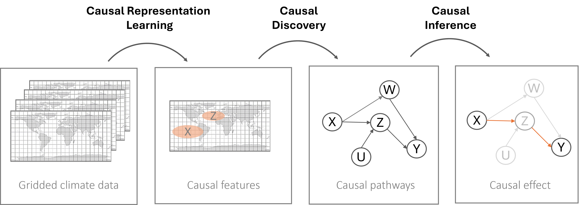

Causal Data Science

Causal data science offers powerful tools to better understand the drivers of regional climate variability and extreme events. Moving beyond correlation, causal approaches help identify the mechanisms that underlie complex climate processes—an essential step toward more robust and interpretable insights. Our work integrates methods from causal inference, causal discovery, and causal representation learning to investigate cause-effect relationships in climate data.
Causal inference techniques estimate the influence of specific drivers while accounting for confounding factors. We apply this to disentangle the roles of multiple teleconnections (e.g. ENSO, MJO) and to better understand their individual and combined contributions to regional climate impacts and extremes. These causal tools are particularly well-suited to identifying how such patterns propagate through the climate system.
With causal discovery, we can further uncover potential causal structures directly from observational data, revealing interactions that may not be captured in purely correlation-based approaches.
A newer and rapidly developing area of our research is causal representation learning, which enables us to learn structured, low-dimensional representations of climate patterns directly from high-dimensional gridded data. By integrating causal reasoning with machine learning, this approach helps isolate key modes of variability and improves the interpretability of complex datasets. Together, these methods form a growing toolkit for tackling pressing questions in climate science. While challenges remain, causal data science holds strong potential to complement physical models and deepen our understanding of how remote climatic drivers can shape local, and regional changes.
Publications:
Carvalho-Oliveira, J., Di Capua, G., Borchert, L. F., Donner, R. V., and Baehr, J.: Causal relationships and predictability of the summer East Atlantic teleconnection (2024), Weather Clim. Dynam., 5, 1561–1578, https://doi.org/10.5194/wcd-5-1561-202.
Kretschmer, M.; Adams, S.; Arribas, A.; Saggioro, E.; Prudden, R.; Robinson, N.; Shepherd, T.: Quantifying causal teleconnection pathways (2021), Bulletin of the American Meteorological Society. 2020. DOI: 10.1175/BAMS-D-20-0117.1.
Pfleiderer, P., Schleussner, C.-F., Geiger, T., and Kretschmer, M.: Robust predictors for seasonal Atlantic hurricane activity identified with causal effect networks (2020), Weather Clim. Dynam., 1, 313–324, https://doi.org/10.5194/wcd-1-313-2020.